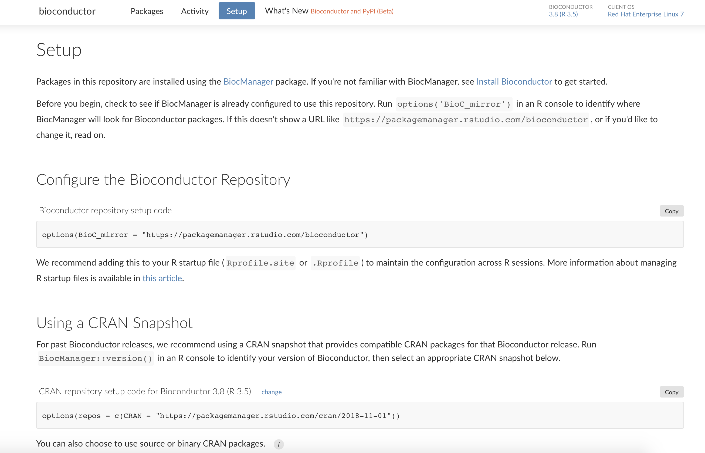

2020-12-07
Packages are the heart of open source data science, but we know they aren’t always easy. Data scientists need access to ever-evolving tools to do their best work, and IT needs to understand the risk of new software while providing a stable environment for reproducible work. RStudio Package Manager helps teams work together to accomplish these goals. Today we are excited to announce a greatly expanded focus, enabling teams to realize these benefits across languages and ecosystems by adding support for Bioconductor, beta support for Python packages from PyPI, and new options for managing historical CRAN snapshots.
Ready to start? Visit the RStudio Public Package Manager, a free and hosted service, or evaluate Package Manager for use within your organization.
1.2.0 adds first class support for Bioconductor, an ecosystem of R packages used in the life sciences. This release makes it possible for data scientists in regulated or restricted environments to install and manage Bioconductor, even in environments without direct internet access. Teams can access Bioconductor packages using the BiocManager client, or they can use install.packages. Bioconductor packages can be combined with local packages and CRAN packages seamlessly. Package Manager also makes Bioconductor analyses more reproducible, by helping combine a Bioconductor release with a corresponding CRAN snapshot. You no longer have to manually manage incompatibilities between older Bioconductor releases and rolling CRAN updates.

This release adds beta support for mirroring Python packages from PyPI. By adding PyPI support, we intend to make it much easier for multilingual teams to work together, and mitigate the challenges IT organizations face in maintaining their own PyPI mirrors. One exciting capability of Package Manager’s PyPI support is the addition of PyPI snapshots, enabling teams to time travel in Python just like they can in R. You can also search for Python packages explore documentation, and track package downloads. Package Manager is fully compatible with pip and tools like virtualenv and pyenv.
PyPI support is in Beta. We hope you will try the feature and give us your feedback, but please be cautious about integrating with production systems. There are a few known limitations we will be addressing: adding the option to share local Python packages and enabling fully air-gapped users.

In this release, we’ve made significant improvements for teams navigating CRAN. It is now possible to have granular control over which CRAN snapshots are available, allowing administrators to present CRAN as it existed on certain days. This addition unlocks new management strategies. For instance, you can provide regular updates, but always stay one week behind the latest changes.

More granular snapshot access also makes it easier to start using Package Manager. Many teams have an existing set of packages they installed from MRAN or a package library they created when they installed R, and now you can easily recreate the same set in Package Manager.
When compatible, we’ve also enabled date-based URLs, making it more intuitive for data scientists to install packages from an understood point in time.

These changes all extend to curated subsets of CRAN as well, so that admins can provide approved packages from any point in time.
There are many additional improvements and bug fixes in this release, please review the full release notes.
Upgrade Planning
Upgrading to 1.2.0 from 1.1.6 is a major upgrade. The upgrade will be automatic, but we recommend reviewing the release notes and ensuring the new desired capabilities are applied along with any relevant upgrades to storage requirements. If you are upgrading from an earlier version, be sure to consult the release notes for the intermediate releases, as well.
Download the 45-day evaluation today to see how RStudio Package Manager can help you, your team, and your entire organization access and organize R packages. Or take a look at the free Public Package Manager.
To stay up to date with new releases of RStudio products, as well as information on minor updates, patches, and potential security notifications, we encourage you to subscribe to the Product Information email list at https://rstudio.com/about/subscription-management/